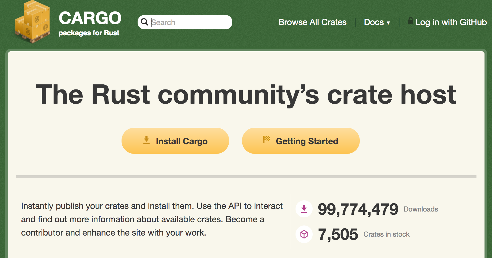

class: center, middle # An Introduction to Rust for Rubyists ??? Agenda What is Rust and why might a Rubyist be interested? Then divide talk into 3 sections: 1. A look at types and traits, and how you might build something object-like with functional data structures 2. Ownership - why is this important and how it differentiates from C and C++ 3. What is the result of all these languages features? Performance, concurrency, safety And to break up those sections a look at 3 awesome rust projects --- class: center # What is Rust?  > "Rust is a systems programming language that runs blazingly fast, prevents segfaults, and guarantees thread safety." words.steveklabnik.com/rust-is-more-than-safety ??? Around 7 years old, out of a Mozilla project to rewrite firefox web rendering engine. Servo. For Rubyists the expressiveness of syntax appeals Also safe and performant Descendant of ML (Elm, Haskell F#, Erlang) - type inference and ADTs Steve Klabnik - "Rust is more than safety" end of 2016 post - fearless coding, refactoring, trust the compiler - not just systems, productive across domains --- # Why might a Rubyist be interested? * Cargo & Crates * Expressive syntax * Low level made accessible  ??? Great tooling in Cargo (build) and creates.io (packages like gems) - might not seem like much to us but big for those from the C++ world Cargo: Can get up and running with project fast and share code. Low level in terms of performance: opening up things like OS programming, systems-level libraries, game development, and similar that scare away devs from scripting languages. High level in terms of usability: allows functional programming, can infer types, composability with traits (mixin-like) --- class: center, middle # Hi! ??? Main is entry point to every binary you compile All values are immutable by default. Have mut keyword. --- # Types! (The strong kind) ```rust enum BoardGameTurn { Move { squares: i32 }, Pass, Quit, } ``` ```rust struct Point3d { x: i32, y: i32, z: i32, } ``` "Hey, this looks like a class" - *Rubyist* ??? Primitives: like numbers and booleans Algebraic Data Types: tuple, struct (product types) and enum (sum type) - ask at end if want to know more Useful data structures but have no behavior, we will come to this later with traits --- No null, but accounted for with special data types: `Option<T>` --- and --- `Result<T, E>` ```rust fn find(haystack: &str, needle: char) -> Option<usize> { for (offset, c) in haystack.char_indices() { if c == needle { return Some(offset); } } None } fn main() { let file_name = "foobar.rs"; match find(file_name, '.') { None => println!("No file extension found."), Some(i) => println!("File extension: {}", &file_name[i+1..]), } } ``` ??? Useful return types. Generics. Like duck-typing, but for static languages. Mono-morphization. Woo pattern matching! Case analysis is the ONLY way to get a result out of an Option type, forcing programmer to be exhaustive. In Rust source: None and Some are both members of a simple enum (Option) defined in the standard library. Can just call .unwrap() but that's like saying “Give me the result of the computation, and if there was an error, panic and stop the program.” --- # Traits ```rust trait HasArea { fn area(&self) -> f64; } struct Circle { x: f64, y: f64, radius: f64, } impl HasArea for Circle { fn area(&self) -> f64 { std::f64::consts::PI * (self.radius * self.radius) } } ``` ??? Traits allow behavior to be defined separately to the data type. The implementation is separate to the Trait. Example here makes obvious an implementation for a Square data type. Like polymorphism in ruby, but correct implementation is inlined by the compiler. Like with generics. Speaking of polymorphism and OO concepts, how about inheritance? By not having inheritance the language is limited in some sense, but it makes the frequent 'inheritance vs composition' decisions you need to make in Ruby unnecessary. Considering implementing some of the POODR bicycle examples in Rust to help better understand. --- class: center, middle # Awesome project 1: (https://servo.org/) ??? Bits of Rust in firefox, maybe show example Rust media parser shipping in Firefox since July 2016. End user would not have noticed difference but extra security from malicious media, through type safety. Get involved, google 'mozilla oxidation' --- # Ownership and borrowing Data is moved or 'borrowed' (by reference) when it is sent to a function <video src="assets/N1o8l3n.mp4" width="600" autoplay loop> ??? This is where the real power of the language is. What is the price you usually pay when your language doesn't have GC? Taking memory management task away from the developer without requiring GC like Ruby. Data is moved or borrowed (in example earlier we moved shrug_name to the greet method) memory is deallocated when the owning scope is finished - the data is gone references: unlimited immutable references -- max one mutable reference lifetimes: can be explicit for how long data lives --- class: center, middle # Show me some code!!! --- class: center, middle # Awesome project 2: (https://rocket.rs/) --- # What's the result of these language features? (1/2) None of the deployment headaches about runtime versions - like Ruby or JRE Concurrency with safety (example) ??? runtime: rust is just standard lib - the runtime comes with the 'thing' you are releasing - more deployable, just a binary like Go but without the GC - no version issues like with ruby when running your code on different systems concurrency: two key traits for data used with threads: send and sync By implementing Send trait we know the type can safely move between threads, useful working with FFI when we know that lib we're wrapping isnt threadsafe The Sync trait tells us the type can be used safely by reference from multiple threads Other options for concurrency include channels, atomic reference counting, and futures for composing async behaviour like promises. http://areweconcurrentyet.com/ --- # What's the result of these language features? (2/2) Heap allocation reduced Performance! [fast_blank C example](https://github.com/SamSaffron/fast_blank) ```rust pub extern "C" fn fast_blank(buf: Buf) -> bool { buf.as_slice().chars().all(|c| c.is_whitespace()) } ``` ??? Most data we are working with will be kept on the stack (and passed by reference) unless the type requires heap allocation. Big difference with Ruby, unfair to compare. fast_blank: We can get the performance of C with rust, and use to speed op our Ruby apps without the safety issues. --- class: center, middle # Awesome project 3: (https://intermezzos.github.io/) --- class: middle # Learn more * The Rust Book https://doc.rust-lang.org/stable/book/ * New Rustacean http://www.newrustacean.com/ * into_rust http://intorust.com/ * Julia Evans' blog https://jvns.ca/ --- class: center, middle # Thanks. Any questions? Daniel King danielking.eu @kingy ??? runtime: rust is just standard lib - the runtime comes with the 'thing' you are releasing - more deployable - no version issues when running your code Algebraic Data Types: tuple, struct (product types, the type is combination of all possible vaues in members) and enum (sum type, the type is the sum of all members, it can only be one) ---